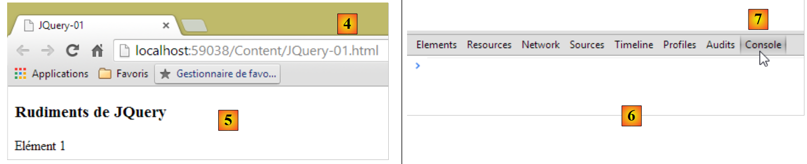
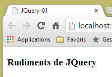
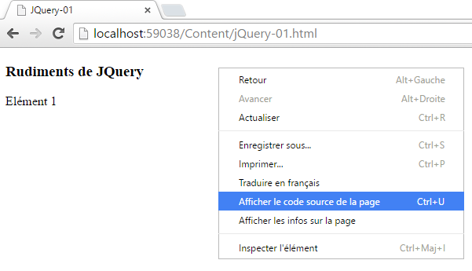
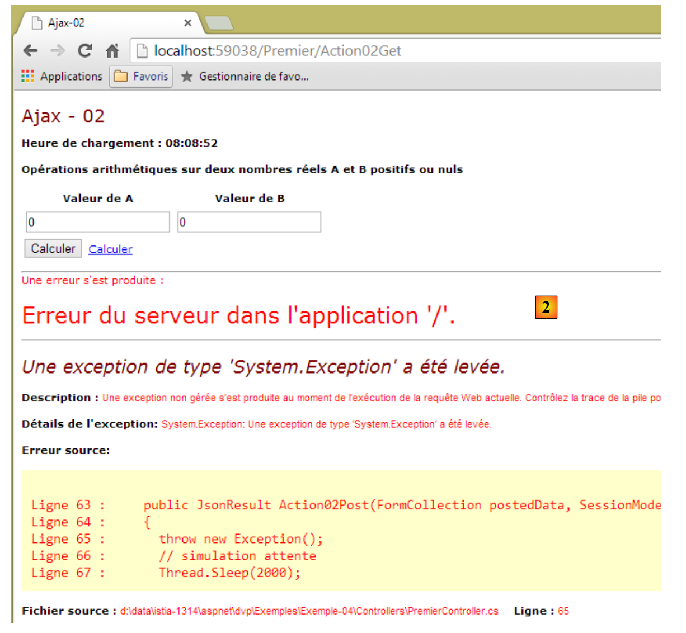
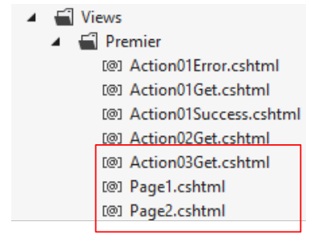
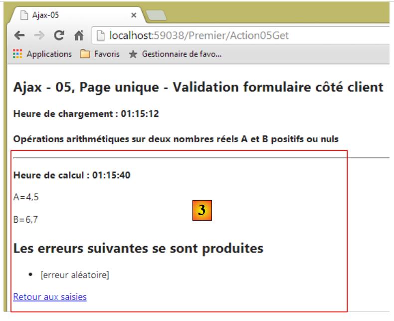
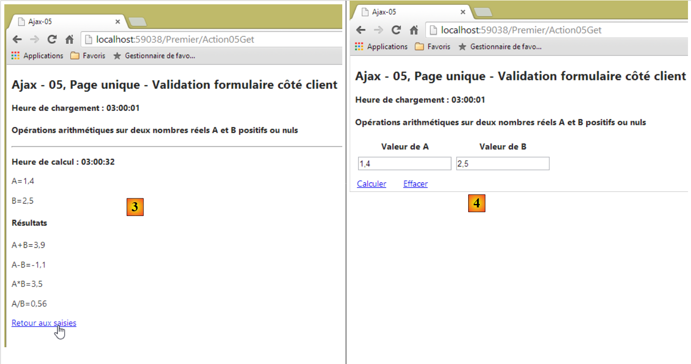

7. Implementación de Ajax en una aplicación ASP.NET MVC
7.1. El papel de AJAX en una aplicación web
Por el momento, los ejemplos de aprendizaje estudiados tienen la siguiente arquitectura:
 |
Para pasar de una vista [Vue1] a una vista [Vue2], el navegador:
- envía una solicitud a la aplicación web;
- recibe la vista [Vue2] y la muestra en lugar de la vista [Vue1].
Este es el esquema clásico:
- solicitud del navegador;
- el servidor web genera una vista en respuesta al cliente;
- visualización de esta nueva vista por parte del navegador.
Existe otro modo de interacción entre el navegador y el servidor web: AJAX (Asynchronous JavaScript and XML). Se trata, de hecho, de interacciones entre la vista mostrada por el navegador y el servidor web. El navegador sigue haciendo lo que sabe hacer, es decir, mostrar una vista HTML, pero ahora es controlado por el JavaScript integrado en la vista HTML mostrada. El esquema es el siguiente:
 |
- en [1], se produce un evento en la página mostrada en el navegador (clic en un botón, cambio de un texto, etc.). Este evento es interceptado por el JavaScript (JS) integrado en la página;
- en [2], el código JavaScript realiza una solicitud HTTP tal y como lo habría hecho el navegador. La solicitud es asíncrona: el usuario puede seguir interactuando con la página sin verse bloqueado por la espera de la respuesta a la solicitud HTTP. La solicitud sigue el proceso clásico de procesamiento. Nada (o casi nada) la distingue de una solicitud clásica;
- en [3], se envía una respuesta al cliente JS. En lugar de una vista HTML completa, se envía más bien una vista HTML parcial, un flujo XML o JSON (notación de objetos JavaScript);
- en [4], el JavaScript recupera esta respuesta y la utiliza para actualizar una zona de la página HTML que se está mostrando.
Para el usuario, se produce un cambio en la vista, ya que lo que ve ha cambiado. Sin embargo, no se produce una recarga total de la página, sino simplemente una modificación parcial de la página mostrada. Esto contribuye a dotar a la página de fluidez e interactividad: al no producirse una recarga total de la página, es posible gestionar eventos que antes no se podían gestionar. Por ejemplo, ofrecer al usuario una lista de opciones a medida que va introduciendo caracteres en un campo de entrada. Cada vez que se teclea un nuevo carácter, se envía una solicitud AJAX al servidor, que a su vez devuelve otras propuestas. Sin Ajax, este tipo de ayuda a la introducción de datos era antes imposible. No se podía recargar una nueva página con cada carácter tecleado.
7.2. Conceptos básicos de JQuery y JavaScript
A menudo hemos incorporado la biblioteca de JavaScript JQuery a nuestras páginas. En ella se encuentra la línea:
<script type="text/javascript" src="~/Scripts/jquery-1.8.2.min.js"></script>
Nota: adapta la versión de jQuery a la de tu versión de Visual Studio.
La tecnología Ajax de ASP.NET MVC utiliza JQuery. Vamos a escribir nosotros mismos algunos scripts JQuery. Por ello, a continuación presentamos los conceptos básicos de JQuery que hay que conocer para comprender los scripts de este capítulo.
Creamos un nuevo proyecto [Exemple-04] dentro de nuestra solución [Exemples]:
 |
Para utilizar Ajax con ASP.NET MVC, debe haber una línea en el archivo de configuración [Web.config] [1]:
<appSettings>
...
<add key="UnobtrusiveJavaScriptEnabled" value="true" />
</appSettings>
La línea 3 permite el uso de Ajax en las vistas ASP.NET. Está presente por defecto.
Creamos un archivo HTML [JQuery-01.html] en la carpeta [Content] del nuevo proyecto [2]:
 |
Este archivo tendrá el siguiente contenido:
<!DOCTYPE html>
<html xmlns="http://www.w3.org/1999/xhtml">
<head>
<meta http-equiv="Content-Type" content="text/html; charset=utf-8" />
<title>JQuery-01</title>
<script type="text/javascript" src="/Scripts/jquery-1.8.2.min.js"></script>
</head>
<body>
<h3>Rudiments de JQuery</h3>
<div id="element1">
Elément 1
</div>
</body>
</html>
- línea 6: importación de JQuery (adapta la versión a la de tu versión de Visual Studio);
- líneas 10-12: un elemento de la página con el ID [element1]. Vamos a trabajar con este elemento.
Visualizamos este archivo en el navegador Google Chrome [4] y [5]:
 |
En Google Chrome, pulsa [Ctrl-Maj-I] para que aparezcan las herramientas de desarrollo [6]. La pestaña [Console] [7] permite ejecutar código JavaScript. A continuación, te indicamos los comandos de JavaScript que debes escribir y te ofrecemos una explicación de cada uno de ellos.
JS | resultado |
|
: devuelve la colección de todos los elementos con el id [element1], por lo que normalmente será una colección de 0 o 1 elemento, ya que no puede haber dos ids idénticos en una página HTML. |  |
|
: aplica el texto [blabla] a todos los elementos de la colección. Esto tiene como efecto cambiar el contenido que muestra la página |  |
|
oculta los elementos de la colección. El texto [blabla] ya no se muestra. |  |
|
: vuelve a mostrar la colección. Esto nos permite ver que el elemento con el ID [element1] tiene el atributo CSS style='display: none;', lo que hace que el elemento quede oculto. | |
|
: muestra los elementos de la colección. Vuelve a aparecer el texto [blabla]. Es el atributo CSS style='display: block;' el que garantiza esta visualización. |  |
|
: asigna un atributo a todos los elementos de la colección. En este caso, el atributo es [style] y su valor, [color: red]. El texto [blabla] se muestra en rojo. |  |
 | |
 |
Cabe destacar que el URL del navegador no ha cambiado durante todas estas operaciones. No ha habido ningún intercambio con el servidor web. Todo ocurre dentro del navegador. Ahora, veamos el código fuente de la página:
 |
<!DOCTYPE html>
<html xmlns="http://www.w3.org/1999/xhtml">
<head>
<meta http-equiv="Content-Type" content="text/html; charset=utf-8" />
<title>JQuery-01</title>
<script type="text/javascript" src="/Scripts/jquery-1.8.2.min.js"></script>
</head>
<body>
<h3>Rudiments de JQuery</h3>
<div id="element1">
Elément 1
</div>
</body>
</html>
Este es el texto inicial. No refleja en absoluto las modificaciones que hemos realizado en el elemento de las líneas 10-12. Es importante tenerlo en cuenta a la hora de depurar JavaScript. Por lo tanto, a menudo resulta inútil visualizar el código fuente de la página mostrada. Para conocer el código fuente de la página que se está mostrando actualmente, procederemos de la siguiente manera:
 |
Ya sabemos lo suficiente para comprender los scripts JS que vendrán a continuación.
7.3. Actualización de una página con un flujo HTML
7.3.1. Las vistas
Nos proponemos estudiar la siguiente aplicación:
 |
- en [1], la hora de carga de la página;
- en [2], se realizan las cuatro operaciones aritméticas con dos números reales A y B;
- en [3], la respuesta del servidor se inserta en una zona de la página;
- en [4], la hora del cálculo. Esta es diferente de la hora de carga de la página [5]. Esta última es igual a [1], lo que indica que la región [6] no se ha recargado. Por otra parte, el URL y el [7] de la página no han cambiado.
7.3.2. El controlador, las acciones, el modelo y la vista
Creamos un controlador llamado [Premier]:
 |
Para mostrar la vista inicial, creamos la siguiente acción [Action01Get]:
[HttpGet]
public ViewResult Action01Get()
{
ViewModel01 modèle = new ViewModel01();
modèle.HeureChargement = DateTime.Now.ToString("hh:mm:ss");
return View(modèle);
}
- línea 4: instanciación del modelo de la vista;
- línea 5: inicialización de la hora de carga de la vista;
- línea 6: visualización de la vista [Action10Get.cshtml] y de su modelo.
El modelo [ViewModel01] es el siguiente:
 |
using System;
using System.ComponentModel.DataAnnotations;
using System.Web.Mvc;
namespace Exemple_04.Models
{
[Bind(Exclude = "AplusB, AmoinsB, AmultipliéparB, AdiviséparB, Erreur, HeureChargement, HeureCalcul")]
public class ViewModel01
{
// formulario
[Required(ErrorMessage="Donnée requise")]
[Display(Name="Valeur de A")]
[Range(0, Double.MaxValue, ErrorMessage = "Tapez un nombre positif ou nul")]
public double A { get; set; }
[Required(ErrorMessage = "Donnée requise")]
[Display(Name = "Valeur de B")]
[Range(0, Double.MaxValue, ErrorMessage="Tapez un nombre positif ou nul")]
public double B { get; set; }
// resultados
public string AplusB { get; set; }
public string AmoinsB { get; set; }
public string AmultipliéparB { get; set; }
public string AdiviséparB { get; set; }
public string Erreur { get; set; }
public string HeureChargement { get; set; }
public string HeureCalcul { get; set; }
}
}
- líneas 11-14: el valor A del formulario;
- líneas 15-18: el valor B del formulario;
- líneas 21-24: los resultados de las cuatro operaciones aritméticas con A y B;
- línea 25: el texto de un posible error;
- línea 26: la hora en que se cargó la vista en el navegador;
- línea 27: la hora de cálculo de los campos de las líneas 21-24;
- línea 7: esta plantilla de vista es también una plantilla de acción. De esta última se excluyen los campos que el navegador no envía.
La vista [Action01Get.cshtml] es la siguiente:
 |
@model Exemple_04.Models.ViewModel01
@{
Layout = null;
AjaxOptions ajaxOpts = new AjaxOptions
{
UpdateTargetId = "résultats",
HttpMethod = "post",
Url = Url.Action("Action01Post"),
LoadingElementId = "loading",
LoadingElementDuration = 1000
};
}
<!DOCTYPE html>
<html lang="fr-FR">
<head>
<meta name="viewport" content="width=device-width" />
<title>Ajax-01</title>
<link rel="stylesheet" href="~/Content/Site.css" />
<script type="text/javascript" src="~/Scripts/jquery-1.8.2.min.js"></script>
<script type="text/javascript" src="~/Scripts/jquery.validate.min.js"></script>
<script type="text/javascript" src="~/Scripts/jquery.validate.unobtrusive.min.js"></script>
<script type="text/javascript" src="~/Scripts/globalize/globalize.js"></script>
<script type="text/javascript" src="~/Scripts/globalize/cultures/globalize.culture.fr-FR.js"></script>
<script type="text/javascript" src="~/Scripts/globalize/cultures/globalize.culture.en-US.js"></script>
<script type="text/javascript" src="~/Scripts/jquery.unobtrusive-ajax.js"></script>
<script type="text/javascript" src="~/Scripts/myScripts-01.js"></script>
</head>
<body>
<h2>Ajax - 01</h2>
<p><strong>Heure de chargement : @Model.HeureChargement</strong></p>
<h4>Opérations arithmétiques sur deux nombres réels A et B positifs ou nuls</h4>
@using (Ajax.BeginForm("Action01Post", null, ajaxOpts, new { id = "formulaire" }))
{
<table>
<thead>
<tr>
<th>@Html.LabelFor(m => m.A)</th>
<th>@Html.LabelFor(m => m.B)</th>
</tr>
</thead>
<tbody>
<tr>
<td>@Html.TextBoxFor(m => m.A)</td>
<td>@Html.TextBoxFor(m => m.B)</td>
</tr>
<tr>
<td>@Html.ValidationMessageFor(m => m.A)</td>
<td>@Html.ValidationMessageFor(m => m.B)</td>
</tr>
</tbody>
</table>
<p>
<input type="submit" value="Calculer" />
<img id="loading" style="display: none" src="~/Content/images/indicator.gif" />
<a href="javascript:postForm()">Calculer</a>
</p>
}
<hr />
<div id="résultats" />
</body>
</html>
- línea 1: la vista tiene como modelo un tipo [ViewModel01];
- línea 21: se necesita JQuery tanto para las validaciones como para Ajax;
- líneas 22-23: las bibliotecas de validación;
- líneas 24-26: las bibliotecas de internacionalización;
- línea 27: la biblioteca de Ajax;
- línea 28: una biblioteca de JavaScript local;
- línea 33: visualización de la hora de carga de la vista;
- línea 35: un formulario Ajax —volveremos sobre ello más adelante—;
- líneas 40-41: etiquetas de los campos de introducción de los números A y B;
- líneas 46-47: campos de introducción de los números A y B;
- líneas 50-51: mensajes de error para los campos de los números A y B;
- línea 56: el botón que envía el formulario. Este se enviará mediante una solicitud Ajax;
- línea 57: una imagen de espera que se muestra durante la solicitud Ajax;
- línea 58: un enlace para enviar el formulario mediante una solicitud Ajax;
- línea 62: una etiqueta <div> con el identificador [résultats]. Ahí es donde colocaremos el flujo HTML devuelto por el servidor web.
Esta vista muestra la siguiente página:
 |
Veamos ahora el código que implementa Ajax en el formulario:
...
@{
Layout = null;
AjaxOptions ajaxOpts = new AjaxOptions
{
UpdateTargetId = "résultats",
HttpMethod = "post",
Url = Url.Action("Action01Post"),
LoadingElementId = "loading",
LoadingElementDuration = 1000
};
}
...
@using (Ajax.BeginForm("Action01Post", null, ajaxOpts, new { id = "formulaire" }))
{
....
<p>
<input type="submit" value="Calculer" />
<img id="loading" style="display: none" src="~/Content/images/indicator.gif" />
<a href="javascript:postForm()">Calculer</a>
</p>
}
...
<div id="résultats" />
- línea 15: en lugar de utilizar [@Html.BeginForm], se utiliza [@Ajax.BeginForm]. Este método admite numerosas sobrecargas. La utilizada tiene la siguiente firma:
Ajax.BeginForm(string ActionName, RouteValueDictionary routeValues, AjaxOptions ajaxOptions, IDictionary<string,object> htmlAttributes)
Aquí utilizamos los siguientes parámetros efectivos:
Action01Post: el nombre de la acción que procesará el POST del formulario,
null: no hay información de ruta que proporcionar,
ajaxOpts: las opciones de la llamada Ajax. Se han definido en las líneas 6-10,
new { id = "formulaire" }: para asignar el atributo [id='formulaire'] a la etiqueta <form> generada;
Las opciones Ajax utilizadas son las siguientes:
- línea 8: el destino de la solicitud Ajax;
- línea 7: método de la solicitud Ajax HTTP;
- línea 6: ID de la sección de la página que se actualizará con la respuesta a la solicitud Ajax;
- línea 9: id de la zona de la página que se mostrará durante la solicitud Ajax —por lo general, una imagen de espera—. En este caso, se mostrará la línea 20, que contiene una imagen animada que simboliza la espera. Inicialmente, esta imagen queda oculta por el estilo [display : none];
- línea 10: tiempo de espera en milisegundos antes de que se muestre la imagen animada; en este caso, 1 segundo.
El código HTML generado por el formulario Ajax es el siguiente:
<form action="/Premier/Action01Post" data-ajax="true" data-ajax-loading="#loading" data-ajax-loading-duration="1000" data-ajax-method="post" data-ajax-mode="replace" data-ajax-update="#résultats" data-ajax-url="/Premier/Action01Post" id="formulaire" method="post"> <table>
...
<p>
<input type="submit" value="Calculer" />
<img id="loading" style="display: none" src="/Content/images/indicator.gif" />
<a href="javascript:postForm()">Calculer</a>
</p>
</form>
<hr />
<div id="résultats" />
- línea 1: la etiqueta <form> generada. Cabe destacar los atributos [data-ajax-attr], que reflejan los valores de los campos del objeto de tipo [AjaxOptions] asociado a la solicitud Ajax. Estos atributos son gestionados por la biblioteca Ajax. Sin ellos, la etiqueta <form> queda así:
<form action="/Premier/Action01Post" id="formulaire" method="post">
...
<p>
<input type="submit" value="Calculer" />
<img id="loading" style="display: none" src="/Content/images/indicator.gif" />
<a href="javascript:postForm()">Calculer</a>
</p>
</form>
En ese caso, se trata de un formulario HTML clásico. Este es el código que se ejecutará si el usuario desactiva JavaScript en su navegador. Las líneas 5 y 6 quedan entonces sin utilizar.
7.3.3. La acción [Action01Post]
La acción [Action01Post], que procesa la solicitud Ajax HTTP, es la siguiente:
[HttpPost]
public PartialViewResult Action01Post(FormCollection postedData, SessionModel session)
{
// simulación de espera
Thread.Sleep(2000);
// instanciación del modelo de la acción
ViewModel01 modèle = new ViewModel01();
// hora de cálculo
modèle.HeureCalcul = DateTime.Now.ToString("hh:mm:ss");
// actualización del modelo
TryUpdateModel(modèle, postedData);
if (!ModelState.IsValid)
{
// se devuelve un error
modèle.Erreur = getErrorMessagesFor(ModelState);
return PartialView("Action01Error", modèle);
}
// una de cada dos veces se simula un error
int val = session.Randomizer.Next(2);
if (val == 0)
{
modèle.Erreur = "[erreur aléatoire]";
return PartialView("Action01Error", modèle);
}
// cálculos
modèle.AplusB = string.Format("{0}", modèle.A + modèle.B);
modèle.AmoinsB = string.Format("{0}", modèle.A - modèle.B);
modèle.AmultipliéparB = string.Format("{0}", modèle.A * modèle.B);
modèle.AdiviséparB = string.Format("{0}", modèle.A / modèle.B);
// vista
return PartialView("Action01Success", modèle);
}
- línea 1: la acción solo procesa un [POST];
- línea 2: admite como modelo de acción:
- [FormCollection postedData]: el conjunto de valores enviados por la solicitud Ajax POST,
- [SessionModel session]: los elementos de la sesión. Aquí se utiliza una técnica descrita en el apartado 4.10;
- línea 2: la acción devolverá un fragmento HTML y no una página completa HTML;
- línea 5: de forma artificial, nos detenemos dos segundos para simular una acción Ajax prolongada;
- línea 7: se instancia un modelo de tipo [ViewModel01];
- línea 9: se inicializa el tiempo de cálculo;
- línea 11: se intenta actualizar el modelo de tipo [ViewModel01] con los valores enviados. Recordemos que hay dos: los valores de los números A y B;
- línea 12: se comprueba si esta actualización se ha realizado correctamente;
- línea 15: en caso de error, se rellena el campo [Erreur] del modelo;
- línea 16: se devuelve una vista parcial [Action01Error.cshtml] que utiliza el modelo [ViewModel01];
- líneas 19-24: una de cada dos veces, se simula un error;
- línea 19: se genera un número entero aleatorio en el intervalo [0,1]. El generador de números se toma de la sesión;
- línea 20: si el valor generado es 0, se simula un error;
- línea 22: el mensaje de error se incluye en la plantilla;
- línea 23: se devuelve una vista parcial [Action01Error.cshtml] que utiliza la plantilla [ViewModel01];
- líneas 26-29: se realizan los cálculos aritméticos con los números A y B y los resultados se introducen en el modelo en forma de cadenas de caracteres;
- línea 31: se devuelve una vista parcial [Action01Success.cshtml] que utiliza la plantilla [ViewModel01];
7.3.4. La vista [Action01Error]
La vista [Action01Error.cshtml] es la siguiente:
@model Exemple_04.Models.ViewModel01
<h4>Résultats</h4>
<p><strong>Heure de calcul : @Model.HeureCalcul</strong></p>
<p style="color: red;">Une erreur s'est produite : @Model.Erreur</p>
Recordemos que este flujo parcial HTML se enviará en respuesta a la solicitud Ajax HTTP de tipo POST y se colocará en la página, en la región con id [résultats]. Toda esta información procede de la configuración de Ajax utilizada en la página principal [Action01Get.cshtml]:
@model Exemple_04.Models.ViewModel01
@{
Layout = null;
AjaxOptions ajaxOpts = new AjaxOptions
{
UpdateTargetId = "résultats",
HttpMethod = "post",
Url = Url.Action("Action01Post"),
LoadingElementId = "loading",
LoadingElementDuration = 1000
};
}
A continuación se muestra un ejemplo de respuesta con error:
 |
7.3.5. La vista [Action01Success]
La vista [Action01Success.cshtml] es la siguiente:
@model Exemple_04.Models.ViewModel01
<h4>Résultats</h4>
<p><strong>Heure de calcul : @Model.HeureCalcul</strong></p>
<p>A+B=@Model.AplusB</p>
<p>A-B=@Model.AmoinsB</p>
<p>A*B=@Model.AmultipliéparB</p>
<p>A/B=@Model.AdiviséparB</p>
Una vez más, este flujo parcial HTML se enviará como respuesta a la solicitud Ajax HTTP de tipo POST y se colocará en la página, en la región con el ID [résultats]:
 |
7.3.6. G estión de la sesión
Hemos visto que [Action01Post] utiliza la sesión. El modelo de la sesión es el siguiente, de tipo [SessionModel]:
using System;
namespace Exemple_03.Models
{
public class SessionModel
{
public Random Randomizer { get; set; }
}
}
La sesión se inicializa en [Global.asax]:
// Sesión
protected void Session_Start()
{
SessionModel sessionModel=new SessionModel();
sessionModel.Randomizer=new Random(DateTime.Now.Millisecond);
Session["data"] = sessionModel;
}
La asociación de la sesión a un modelo se realiza en [Application_Start]:
protected void Application_Start()
{
...
// enlazadores de modelos
ModelBinders.Binders.Add(typeof(SessionModel), new SessionModelBinder());
}
Se ha descrito la clase [SessionModelBinder].
7.3.7. Gestión de la imagen de espera
@model Exemple_04.Models.ViewModel01
@{
Layout = null;
AjaxOptions ajaxOpts = new AjaxOptions
{
...
LoadingElementId = "loading",
LoadingElementDuration = 1000
};
}
...
<body>
...
@using (Ajax.BeginForm("Action01Post", null, ajaxOpts, new { id = "formulaire" }))
{
...
<p>
<input type="submit" value="Calculer" />
<img id="loading" style="display: none" src="~/Content/images/indicator.gif" />
<a href="javascript:postForm()">Calculer</a>
</p>
}
...
Cuando se inicia la solicitud Ajax, la región con el ID [loading], línea 7, se muestra tras un segundo [ligne 8]. Esta región es la imagen de la línea 21, inicialmente oculta. Esto da como resultado la siguiente interfaz:
 |
7.3.8. Gestión del enlace [Calculer]
Analicemos el enlace [Calculer] de la página principal [Action01Get.cshtml]:
<head>
<meta name="viewport" content="width=device-width" />
<title>Ajax-01</title>
...
<script type="text/javascript" src="~/Scripts/myScripts-01.js"></script>
</head>
<body>
<h2>Ajax - 01</h2>
<p><strong>Heure de chargement : @Model.HeureChargement</strong></p>
<h4>Opérations arithmétiques sur deux nombres réels A et B positifs ou nuls</h4>
@using (Ajax.BeginForm("Action01Post", null, ajaxOpts, new { id = "formulaire" }))
{
...
<p>
<input type="submit" value="Calculer" />
<img id="loading" style="display: none" src="~/Content/images/indicator.gif" />
<a href="javascript:postForm()">Calculer</a>
</p>
}
<hr />
<div id="résultats" />
- línea 18: al hacer clic en el enlace [Calculer] se ejecuta la función JS [postForm]. Esta función se define en el archivo [myScripts-01.js], en la línea 5. El script es el siguiente:
 |
function postForm() {
// se realiza una llamada Ajax manualmente con JQuery
var loading = $("#loading");
var formulaire = $("#formulaire");
var résultats = $('#resultados');
$.ajax({
url: '/Premier/Action01Post',
type: 'POST',
data: formulaire.serialize(),
dataType: 'html',
begin: loading.show(),
success: function (data) {
loading.hide()
résultats.html(data);
}
})
}
// http://blog.instance-factory.com/?p=268
$.validator.methods.number = function (value, element) {
return this.optional(element) ||
!isNaN(Globalize.parseFloat(value));
}
$.validator.methods.date = function (value, element) {
return this.optional(element) ||
!isNaN(Globalize.parseDate(value));
}
jQuery.extend(jQuery.validator.methods, {
range: function (value, element, param) {
//Utiliza el complemento de globalización para analizar el valor
var val = Globalize.parseFloat(value);
return this.optional(element) || (
val >= param[0] && val <= param[1]);
}
});
Las funciones de las líneas 19-37 ya se han tratado en el apartado 6.1. Se encargan de la internacionalización de las páginas. No volveremos sobre ellas. En las líneas 1-17, realizamos manualmente la llamada Ajax que, en el caso del botón [Calculer], se realizaba mediante la biblioteca Ajax asociada al proyecto. Para ello, utilizamos la biblioteca JQuery asociada al proyecto.
- línea 3: una referencia al componente con id [loading]. [$("#loading")] devuelve la colección de elementos con id [loading]. Solo hay uno;
- línea 4: una referencia al componente con el ID [formulaire];
- línea 5: una referencia al componente con id [résultats];
- línea 6: la llamada Ajax con sus opciones;
- línea 7: el URL destino de la llamada Ajax;
- línea 8: el método HTTP utilizado;
- línea 9: los datos enviados. [formulaire.serialize] crea la cadena [A=val1&B=val2] del campo POST del formulario con id [formulaire];
- línea 10: el tipo de datos que se espera recibir como respuesta. Sabemos que el servidor devolverá un flujo HTML;
- línea 11: el método que se debe ejecutar al iniciar la solicitud. Aquí se indica que hay que mostrar el componente con el ID [loading]. Se trata de la imagen animada de espera;
- línea 12: el método que se debe ejecutar si la solicitud Ajax se realiza con éxito. El parámetro [data] es la respuesta completa del servidor. Sabemos que se trata de un flujo HTML;
- línea 13: se almacena en caché la señal de espera;
- línea 14: se actualiza el componente con id [résultats] con el valor HTML del parámetro [data].
Se invita al lector a probar el enlace [Calculer]. Funciona igual que el botón [Calculer], salvo por una an . Una vez que se ha utilizado este enlace, se pueden enviar valores inválidos de A y B:
 |
- en [1] y [2], se han introducido valores no válidos. Estos son señalados por los validadores del lado del cliente;
- en [3], se ha hecho clic en el enlace [Calculer];
- en [4], se ha producido un [POST], ya que se obtiene la respuesta [4].
Cuando los valores no son válidos y se hace clic en el botón [Calculer], no se envía el [POST] al servidor. En el mismo caso, con el enlace [Calculer], sí se envía la solicitud [POST] al servidor. Por lo tanto, el botón [Calculer] presenta un comportamiento que no hemos podido reproducir con el enlace [Calculer]. En lugar de intentar resolver este problema ahora, lo dejamos para un ejemplo posterior que también ilustrará otro problema de validación del lado del cliente.
7.4. Actualización de una página HTML con un flujo JSON
En el ejemplo anterior, el servidor web respondía a la solicitud Ajax HTTP con un flujo HTML. En este flujo, había datos acompañados de formato HTML. Nos proponemos retomar el ejemplo anterior, pero esta vez con respuestas JSON (JavaScript Object Notation) que solo contengan los datos. La ventaja es que, de este modo, se transmiten menos bytes.
7.4.1. La acción [Action02Get]
La acción [Action02Get] será el punto de entrada de la nueva aplicación. Su código es el siguiente:
@model Exemple_04.Models.ViewModel02
@{
Layout = null;
AjaxOptions ajaxOpts = new AjaxOptions
{
HttpMethod = "post",
Url = Url.Action("Action02Post"),
LoadingElementId = "loading",
LoadingElementDuration = 1000,
OnBegin = "OnBegin",
OnFailure = "OnFailure",
OnSuccess = "OnSuccess",
OnComplete = "OnComplete"
};
}
<!DOCTYPE html>
<html lang="fr-FR">
<head>
<meta name="viewport" content="width=device-width" />
<title>Ajax-02</title>
....
<script type="text/javascript" src="~/Scripts/myScripts-02.js"></script>
</head>
<body>
<h2>Ajax - 02</h2>
<p><strong>Heure de chargement : @Model.HeureChargement</strong></p>
<h4>Opérations arithmétiques sur deux nombres réels A et B positifs ou nuls</h4>
@using (Ajax.BeginForm("Action02Post", null, ajaxOpts, new { id = "formulaire" }))
{
...
<p>
<input type="submit" value="Calculer" />
<img id="loading" style="display: none" src="~/Content/images/indicator.gif" />
<a href="javascript:postForm()">Calculer</a>
</p>
}
<hr />
<div id="entete">
<h4>Résultats</h4>
<p><strong>Heure de calcul : <span id="heureCalcul"/></strong></p>
</div>
<div id="résultats">
<p>A+B=<span id="AplusB"/></p>
<p>A-B=<span id="AmoinsB"/></p>
<p>A*B=<span id="AmultipliéparB"/></p>
<p>A/B=<span id="AdiviséparB"/></p>
</div>
<div id="erreur">
<p style="color: red;">Une erreur s'est produite : <span id="msg"/></p>
</div>
</body>
</html>
- líneas 4-14: las opciones de la llamada Ajax;
- línea 10: la función JS que se ejecutará al iniciar la solicitud. Esta función se define en el archivo JS al que se hace referencia en la línea 24;
- línea 11: la función JS que se ejecutará en caso de que la solicitud falle;
- línea 12: la función JS, que se ejecutará si la solicitud se realiza con éxito;
- línea 13: la función JS que se ejecutará una vez que la solicitud Ajax haya obtenido su resultado (fallo o éxito);
- líneas 40-43: una región con el ID [entete];
- líneas 44-49: una región con el ID [résultats]. Mostrará los resultados de las cuatro operaciones aritméticas;
- líneas 50-52: una región con el ID [erreur]. Mostrará cualquier mensaje de error que pueda surgir.
7.4.2. La acción [Action02Post]
La solicitud Ajax es procesada por la siguiente acción [Action02Post]:
[HttpPost]
public JsonResult Action02Post(FormCollection postedData, SessionModel session)
{
// simulación en espera
Thread.Sleep(2000);
// validación del modelo
ViewModel02 modèle = new ViewModel02();
// tiempo de carga y cálculo
string HeureChargement = DateTime.Now.ToString("hh:mm:ss");
string HeureCalcul = DateTime.Now.ToString("hh:mm:ss");
// actualización del modelo
TryUpdateModel(modèle, postedData);
if (!ModelState.IsValid)
{
// se devuelve un error
return Json(new { Erreur = getErrorMessagesFor(ModelState), HeureCalcul = HeureCalcul });
}
//: una de cada dos veces se simula un error
int val = session.Randomizer.Next(2);
if (val == 0)
{
// se devuelve un error
return Json(new { Erreur = "[erreur aléatoire]", HeureCalcul = HeureCalcul });
}
// cálculos
string AplusB = string.Format("{0}", modèle.A + modèle.B);
string AmoinsB = string.Format("{0}", modèle.A - modèle.B);
string AmultipliéparB = string.Format("{0}", modèle.A * modèle.B);
string AdiviséparB = string.Format("{0}", modèle.A / modèle.B);
// se devuelven los resultados
return Json(new { Erreur = "", AplusB = AplusB, AmoinsB = AmoinsB, AmultipliéparB = AmultipliéparB, AdiviséparB = AdiviséparB, HeureCalcul = HeureCalcul });
}
- línea 2: el método devuelve un tipo [JsonResult], es decir, un texto en formato JSON;
- línea 16: la información se presenta en forma de una instancia de clase anónima serializada en JSON. El método [getErrorMessagesFor] ya se ha presentado. La cadena JSON enviada al navegador tendrá el siguiente formato:
- línea 31: mismo procedimiento para los resultados aritméticos. En esta ocasión, la cadena JSON enviada al navegador tendrá el siguiente formato:
{"Erreur":"","AplusB":"4","AmoinsB":"-2","AmultipliéparB":"3","AdiviséparB":"0,333333333333333","HeureCalcul":"05:52:17"}
7.4.3. El código JavaScript del lado del cliente
Recordemos la configuración de la llamada Ajax en la página HTML enviada al navegador del cliente:
AjaxOptions ajaxOpts = new AjaxOptions
{
HttpMethod = "post",
Url = Url.Action("Action02Post"),
LoadingElementId = "loading",
LoadingElementDuration = 1000,
OnBegin = "OnBegin",
OnFailure = "OnFailure",
OnSuccess = "OnSuccess",
OnComplete = "OnComplete"
};
Las funciones JS a las que se hace referencia en las líneas 7-10 (a la derecha del signo =) se definen en el siguiente archivo [myScripts-02.js]:
// datos globales
var entete;
var loading;
var résultats;
var erreur;
var heureCalcul;
var msg;
var AplusB;
var AmoinsB;
var AmultipliéparB;
var AdiviséparB;
var formulaire;
...
function postForm() {
...
}
// al cargar el documento
$(document).ready(function () {
formulaire = $("#formulaire");
entete = $("#entete");
loading = $("#loading");
erreur = $("#erreur");
résultats = $('#resultados');
heureCalcul = $("#heureCalcul");
msg = $("#msg");
AplusB = $("#AplusB");
AmoinsB = $("#AmoinsB");
AmultipliéparB = $("#AmultipliéparB");
AdiviséparB = $("#AdiviséparB");
// se ocultan algunos elementos de la página
entete.hide();
résultats.hide();
erreur.hide();
});
// inicio
function OnBegin() {
....
}
// fin de la solicitud
function OnComplete() {
...
}
// éxito
function OnSuccess(data) {
....
}
// error
function OnFailure(request, error) {
...
}
- línea 19: la función JS se ejecuta al finalizar la carga de la página en el navegador;
- líneas 20-30: se recuperan las referencias de todos los componentes de la página que nos interesan. La búsqueda de un componente en una página tiene un coste, por lo que es preferible realizarla solo una vez;
- líneas 33-35: se ocultan los componentes [entete], [résultats] y [loading];
Al iniciar la solicitud Ajax, se ejecuta la siguiente función:
// inicio
function OnBegin() {
// señal de espera encendida
loading.show();
// se ocultan algunos elementos de la página
entete.hide();
résultats.hide();
erreur.hide();
}
- línea 4: se muestra el componente [loading]. Se trata de la imagen animada;
- líneas 6-8: los componentes [entete], [résultats] y [erreur] están ocultos;
Si la solicitud Ajax se realiza con éxito, se ejecuta el siguiente código JS:
// correcto
function OnSuccess(data) {
// visualización de resultados
heureCalcul.text(data.HeureCalcul);
entete.show();
if (data.Erreur != '') {
msg.text(data.Erreur);
erreur.show();
return;
}
// sin errores
AplusB.text(data.AplusB);
AmoinsB.text(data.AmoinsB);
AmultipliéparB.text(data.AmultipliéparB);
AdiviséparB.text(data.AdiviséparB);
résultats.show();
}
Para entender este código hay que recordar los dos textos JSON que podrían enviarse como respuesta al navegador:
en caso de error; de lo contrario, la cadena:
{"Erreur":"","AplusB":"4","AmoinsB":"-2","AmultipliéparB":"3","AdiviséparB":"0,333333333333333","HeureCalcul":"05:52:17"}
Si denominamos a esta cadena [data], el valor del campo [Erreur] se obtiene mediante la notación [data.Erreur] o [data["Erreur"]], según se prefiera. Lo mismo ocurre con los demás campos de la cadena JSON. Por otra parte, para asignar un texto sin formato a un componente con id X, se escribe [X.text(chaine)]. Volvamos al código de la función [OnSuccess]:
- línea 2: [data] es la cadena JSON recibida;
- línea 4: el componente [heureCalcul] recibe su valor;
- línea 5: se muestra el componente [entete];
- línea 6: comprobación del campo [Erreur] de la cadena JSON;
- línea 7: el componente [msg] recibe su valor;
- línea 8: se muestra el componente [erreur];
- línea 9: se ha completado el caso de error;
- línea 12: el componente [AplusB] recibe su valor;
- línea 13: el componente [AmoinsB] recibe su valor;
- línea 14: el componente [AmultipliéparB] recibe su valor;
- línea 15: el componente [AdiviséparB] recibe su valor;
- línea 16: se muestra el componente [résultats].
La función [OnFailure] se ejecutará en caso de que falle la solicitud Ajax HTTP. Este fallo se detecta mediante el código HTTP devuelto por el servidor. El código 500 [Internal Server Error], por ejemplo, indica que el servidor no ha podido ejecutar la solicitud. La función [OnFailure] es la siguiente:
// error
function OnFailure(request, error) {
alert("L'erreur suivante s'est produite :" + error);
}
Nos limitamos a mostrar un cuadro de diálogo con el error que se ha producido. En la práctica, habría que ser más preciso. Pronto ofreceremos otra solución.
Por último, la función [OnComplete] se ejecuta cuando finaliza la consulta, tanto si ha tenido éxito como si ha fallado.
// fin de la consulta
function OnComplete() {
// señal de espera desactivada
loading.hide();
}
Recordamos aquí que es la configuración de la llamada Ajax en la vista [Action02Get.cshtml] la que hace que se llamen estas diferentes funciones:
AjaxOptions ajaxOpts = new AjaxOptions
{
...
OnBegin = "OnBegin",
OnFailure = "OnFailure",
OnSuccess = "OnSuccess",
OnComplete = "OnComplete"
};
7.4.4. El enlace [Calculer]
El código HTML del enlace [Calculer] en la vista [Action02Get.cshtml] es el siguiente:
<a href="javascript:postForm()">Calculer</a>
La función JS [postForm] se encuentra en el archivo importado [myScripts-02.js]:
<script type="text/javascript" src="~/Scripts/myScripts-02.js"></script>
Su código es el siguiente:
function postForm() {
// se realiza una llamada Ajax manualmente con JQuery
$.ajax({
url: '/Premier/Action02Post',
type: 'POST',
data: formulaire.serialize(),
dataType: 'json',
beforeSend: OnBegin,
success: OnSuccess,
error: OnFailure,
complete: OnComplete
})
}
Ya nos hemos encontrado con un código similar.
- línea 4: URL, destino de la llamada Ajax;
- línea 5: comando HTTP utilizado por la llamada Ajax;
- línea 6: valores enviados. Son el resultado de la serialización de los valores del formulario. Este, identificado con el id [formulaire], se referencia mediante la variable [formulaire]. [data] será una cadena de caracteres con el formato [A=val1&B=val2];
- línea 7: tipo de formato de la respuesta esperada. Se trata de una cadena JSON;
- línea 8: función JS que se ejecutará al iniciar la llamada Ajax;
- línea 9: función JS que se ejecutará si la llamada Ajax se realiza con éxito;
- línea 10: función JS que se ejecutará si la llamada Ajax falla;
- línea 11: función JS que se ejecutará una vez recibida la respuesta del servidor, independientemente de si se trata de un éxito o de un error.
Volvamos a la función de JavaScript que gestiona el caso en el que la llamada Ajax falla (línea 10). La llamada Ajax falla en diversas situaciones, por ejemplo, cuando el servidor devuelve un código de error como [403 Forbidden], [404 Not Found], [500 Internal Server Error], [301 Moved Permanently], etc.
En el ejemplo anterior, la función [OnFailure] es la siguiente:
// error
function OnFailure(request, error) {
alert("L'erreur suivante s'est produite :" + error);
}
Por lo general, la visualización del objeto [error] no aporta ninguna información interesante. Si se utiliza una llamada Ajax realizada con JQuery, se puede emplear el siguiente método [OnFailure]:
// error
function OnFailure(jqXHR) {
alert("Erreur : " + jqXHR.status + " " + jqXHR.statusText);
msg.html(jqXHR.responseText);
erreur.show();
}
El objeto JQuery [jqXHR] tiene, entre sus propiedades, las siguientes:
- responseText: el texto de la respuesta del servidor;
- status: el código de error devuelto por el servidor;
- statusText: el texto asociado a este código de error.
- línea 3: se muestra el código de error y la descripción correspondiente;
- línea 4: se introduce la respuesta HTML del servidor en el componente con id [msg];
- línea 5: se muestra la región con el identificador [erreur].
Para probar esta función de error, vamos a crear artificialmente una excepción en la acción [Action02Post]:
[HttpPost]
public JsonResult Action02Post(FormCollection postedData, SessionModel session)
{
// una excepción artificial para probar la función de error de la llamada Ajax
throw new Exception();
// simulación de espera
Thread.Sleep(2000);
// validación del modelo
...
La línea 5 lanza una excepción. Ahora probemos la aplicación:
 |
Obtenemos la siguiente respuesta: [1] y [2]:
 |
La respuesta del servidor nos permite ver en qué línea del código del servidor se ha producido el error. A menudo es una información útil que conviene conocer. A partir de ahora utilizaremos esta técnica para gestionar los errores de las llamadas Ajax.
7.5. Aplicación web de página única
La tecnología Ajax permite crear aplicaciones de página única:
- la primera página se obtiene mediante una solicitud clásica del navegador;
- las páginas siguientes se obtienen mediante llamadas Ajax. Así, al final, el navegador nunca cambia de URL y nunca carga una nueva página. A este tipo de aplicación se le denomina «aplicación de página única» (APU) o, en inglés, «Single Page Application» (SPA).
A continuación se muestra un ejemplo básico de este tipo de aplicación. La nueva aplicación tendrá dos vistas:
 |
 |
- en [1], la acción [Action03Get] nos permite acceder a la primera página, la página 1;
- en [2], un enlace nos permite pasar a la página 2 mediante una llamada Ajax;
- en [3], la página URL no ha cambiado. La página que se muestra es la página 2;
- en [4], un enlace nos permite volver a la página 1 mediante una llamada Ajax;
- en [5], la página URL no ha cambiado. La página que se muestra es la página 1.
El código de la acción [Action03Get] es el siguiente:
[HttpGet]
public ViewResult Action03Get()
{
return View();
}
- línea 4: se muestra la vista [Action03Get.cshtml].
La vista [Action03Get.cshtml] es la siguiente:
 |
@{
Layout = null;
}
<!DOCTYPE html>
<html>
<head>
<meta name="viewport" content="width=device-width" />
<title>Action03Get</title>
<script type="text/javascript" src="~/Scripts/jquery-1.8.2.min.js"></script>
<script type="text/javascript" src="~/Scripts/jquery.unobtrusive-ajax.min.js"></script>
</head>
<body>
<h3>Ajax - 03 - Single Page Application</h3>
<div id="content">
@Html.Partial("Page1")
</div>
</body>
</html>
- líneas 16-18: un elemento con el ID [content]. En este elemento se mostrarán las diferentes páginas;
- línea 17: por defecto, la primera página que se mostrará es la [Page1.cshtml].
La página [Page1.cshtml] es la siguiente:
<h4>Page 1</h4>
<p>
@Ajax.ActionLink("Page 2", "Action04", new { Page = 2 }, new AjaxOptions() { UpdateTargetId = "content" })
</p>
- línea 1: el título de la página para diferenciarla de la página 2;
- línea 3: un enlace Ajax con los siguientes parámetros:
- el texto del enlace [Page 2];
- la acción de destino del enlace [Action04];
- los parámetros de la solicitud URL. En este caso, será [/Premier/Action04?Page=2];
- las opciones de la llamada Ajax. En este caso, solo el ID de la región que se va a actualizar con la respuesta del servidor. Para el resto de opciones, se utilizan los valores por defecto cuando existen. El método por defecto de HTTP es GET.
Veamos qué ocurre al hacer clic en el enlace. Se solicita URL [/Premier/Action04?Page=2] con un GET. A continuación, se ejecuta la acción [Action04]:
[HttpGet]
public PartialViewResult Action04(string page = "1")
{
string vue = "Page1";
if (page == "2")
{
vue = "Page2";
}
return PartialView(vue);
}
- línea 2: la acción devuelve un flujo HTML parcial;
- línea 2: la acción tiene como patrón la cadena [page]. Ahora bien, sabemos que URL contiene esta información: [/Premier/Action04?Page=2]. Recordemos que el patrón no distingue entre mayúsculas y minúsculas;
- líneas 4-8: [vue] recibirá el valor [Page2];
- línea 9: se devuelve la vista parcial [Page2.cshtml].
La vista parcial [Page2.cshtml] es la siguiente:
<h4>Page 2</h4>
<p>
@Ajax.ActionLink("Page 1", "Action04", new { Page = 1 }, new AjaxOptions() { UpdateTargetId = "content" })
</p>
Por lo tanto, el servidor devuelve el flujo HTML anterior como respuesta a la llamada Ajax GET [/Premier/Action04?Page=2]. Recordemos que esta llamada Ajax utiliza esta respuesta para actualizar la región con el ID [content] (línea 3 a continuación):
<h4>Page 1</h4>
<p>
@Ajax.ActionLink("Page 2", "Action04", new { Page = 2 }, new AjaxOptions() { UpdateTargetId = "content" })
</p>
Esto da lugar a la siguiente visualización: [1]:
 |
Siguiendo el mismo razonamiento, vemos que al hacer clic en el enlace [Page 1] de [1] se mostrará [2].
Volvamos al esquema general de una aplicación ASP.NET MVC:
 |
Gracias al JavaScript integrado en las páginas HTML y ejecutado en el navegador, se puede trasladar código al navegador y obtener la siguiente arquitectura:
 |
- En [1], la capa web ASP.NET MVC se ha convertido en una interfaz web de acceso a los datos, que suelen estar alojados en una base de datos. Las vistas generadas contienen únicamente datos y ningún elemento de diseño HTML, como, por ejemplo, los flujos XML o JSON;
- en [2]: el navegador muestra vistas estáticas (es decir, no generadas dinámicamente) proporcionadas por un servidor web que puede estar o no en la misma máquina que el servidor [1]. A continuación, estas vistas estáticas se enriquecen con los datos obtenidos mediante JavaScript de la interfaz web [1];
- el código JavaScript integrado en las páginas HTML puede estructurarse en capas:
- la capa [présentation] se encarga de las interacciones con el usuario,
- la capa [DAO] se encarga del acceso a los datos a través del servidor web [1],
- la capa [métier] corresponde a la capa [métier], que antes se encontraba en el servidor [1] y que se ha trasladado al navegador [2];
La ventaja de esta arquitectura es que requiere diferentes competencias:
- el código del servidor web [1] requiere conocimientos de .NET, pero no de JavaScript, HTML ni CSS;
- el código integrado en el navegador [2] requiere conocimientos de JavaScript, HTML y CSS, pero es independiente de la tecnología del servidor web [1].
De este modo, esta arquitectura facilita el trabajo en paralelo de equipos con competencias diferentes. Se adapta especialmente bien a las aplicaciones de página única.
7.6. Aplicación web de página única y validación del lado del cliente
Anteriormente hemos mencionado una anomalía en el ejemplo Ajax-01. Recordemos el contexto:
 |
- en [1] y [2], se introdujeron valores no válidos. Estos fueron señalados por los validadores del lado del cliente;
- en [3], se ha hecho clic en el enlace [Calculer];
- en [4], se ha producido un [POST], ya que se obtiene la respuesta [4].
Cuando los valores no son válidos y se hace clic en el botón [Calculer], no se envía el [POST] al servidor. En el mismo caso, con el enlace [Calculer], sí se envía la solicitud [POST] al servidor. Por lo tanto, el botón [Calculer] presenta un comportamiento que no hemos podido reproducir con el enlace [Calculer].
Vamos a retomar este ejemplo en un nuevo contexto: la aplicación tendrá varias vistas y será del tipo [Application à Page Unique] que acabamos de describir.
7.6.1. Las vistas del ejemplo
El ejemplo tiene varias vistas:
 |
- en [1], la vista [Action05Get];
- en [2], la vista parcial [Formulaire05];
- en [3], la vista parcial [Failure05];
 |
- en [4], la vista parcial [Success05].
La aplicación consta de una única página: el navegador la carga durante la primera solicitud. A continuación, se actualiza mediante llamadas Ajax.
Las páginas anteriores se generan mediante las siguientes vistas [cshtml]:
 |
La vista que se carga inicialmente es la siguiente vista [Action05Get.cshtml]:
@model Exemple_04.Models.ViewModel05
@{
Layout = null;
}
<!DOCTYPE html>
<html lang="fr-FR">
<head>
<meta name="viewport" content="width=device-width" />
<title>Ajax-05</title>
<link rel="stylesheet" href="~/Content/Site.css" />
<script type="text/javascript" src="~/Scripts/jquery-1.8.2.min.js"></script>
<script type="text/javascript" src="~/Scripts/jquery.validate.min.js"></script>
<script type="text/javascript" src="~/Scripts/jquery.validate.unobtrusive.min.js"></script>
<script type="text/javascript" src="~/Scripts/globalize/globalize.js"></script>
<script type="text/javascript" src="~/Scripts/globalize/cultures/globalize.culture.fr-FR.js"></script>
<script type="text/javascript" src="~/Scripts/globalize/cultures/globalize.culture.en-US.js"></script>
<script type="text/javascript" src="~/Scripts/jquery.unobtrusive-ajax.js"></script>
<script type="text/javascript" src="~/Scripts/myScripts-05.js"></script>
</head>
<body>
<h2>Ajax - 05, Page unique - Validation formulaire côté client</h2>
<p><strong>Heure de chargement : @Model.HeureChargement</strong></p>
<h4>Opérations arithmétiques sur deux nombres réels A et B positifs ou nuls</h4>
<img id="loading" style="display: none" src="~/Content/images/indicator.gif" />
<div id="content">
@Html.Partial("Formulaire05", Model)
</div>
</body>
</html>
Cabe destacar los siguientes puntos:
- línea 1: el modelo de la vista es del tipo [ViewModel05], que presentaremos en breve;
- líneas 13-19: aquí se encuentran los scripts de JavaScript necesarios para realizar operaciones Ajax y validaciones del lado del cliente;
- línea 20: vamos a añadir nuestras propias funciones de JavaScript en [myScripts-05.js];
- línea 27: la imagen animada de espera;
- líneas 28-30: una etiqueta con el identificador [content]. Es en esta etiqueta donde se insertarán las vistas parciales [Formulaire05, Success05, Failure05];
- línea 29: inserción de la vista parcial [Formulaire05].
La vista [Action05Get] se encarga de mostrar la parte [1] de la página inicial:
 |
La vista parcial [Formulaire05] generará la parte [2] anterior. Su código es el siguiente:
@model Exemple_04.Models.ViewModel05
@using (Html.BeginForm("Action05Post", "Premier", FormMethod.Post, new { id = "formulaire" }))
{
<table>
<thead>
<tr>
<th>@Html.LabelFor(m => m.A)</th>
<th>@Html.LabelFor(m => m.B)</th>
</tr>
</thead>
<tbody>
<tr>
<td>@Html.TextBoxFor(m => m.A)</td>
<td>@Html.TextBoxFor(m => m.B)</td>
</tr>
<tr>
<td>@Html.ValidationMessageFor(m => m.A)</td>
<td>@Html.ValidationMessageFor(m => m.B)</td>
</tr>
</tbody>
</table>
<p>
<table>
<tbody>
<tr>
<td><a href="javascript:calculer()">Calculer</a>
</td>
<td style="width: 20px" />
<td><a href="javascript:effacer()">Effacer</a>
</td>
</tr>
</tbody>
</table>
</p>
}
- línea 1: la vista parcial admite como modelo un tipo [ViewModel05];
- línea 3: el formulario generado por el método [Html.BeginForm]. Dado que este formulario se enviará mediante una llamada Ajax, se ignorarán los tres primeros parámetros del método. Salvo que el usuario haya desactivado JavaScript en su navegador. En este caso, no tenemos en cuenta esa posibilidad. El cuarto parámetro es importante. El formulario tendrá el identificador [formulaire];
- líneas 5-22: el formulario para introducir los números A y B;
- línea 27: un enlace de JavaScript que inicia la ejecución de las cuatro operaciones aritméticas con A y B;
- línea 30: un enlace de JavaScript que borra los datos introducidos y los posibles mensajes de error relacionados con ellos.
Cabe señalar que el formulario no tiene ningún botón de tipo [submit]. Tendremos que calcular manualmente el [Post] a partir de los valores A y B introducidos.
Si no hay errores, se muestran los resultados:
 |
La parte [4] anterior se genera a partir de la vista parcial [Success05.cshtml] siguiente:
@model Exemple_04.Models.ViewModel05
<hr />
<p><strong>Heure de calcul : @Model.HeureCalcul</strong></p>
<p>A=@Model.A</p>
<p>B=@Model.B</p>
<h4>Résultats</h4>
<p>A+B=@Model.AplusB</p>
<p>A-B=@Model.AmoinsB</p>
<p>A*B=@Model.AmultipliéparB</p>
<p>A/B=@Model.AdiviséparB</p>
<p>
<a href="javascript:retourSaisies()">Retour aux saisies</a>
</p>
- línea 1: la vista parcial [Success05.cshtml] recibe una plantilla de tipo [ViewModel05];
- línea 12: un enlace de JavaScript para volver a los campos de entrada.
En caso de error, se muestra otra vista parcial [3]:
 |
Esta vista se genera mediante el siguiente código [Failure05.cshtml]:
@model Exemple_04.Models.ViewModel05
<hr />
<p><strong>Heure de calcul : @Model.HeureCalcul</strong></p>
<p>A=@Model.A</p>
<p>B=@Model.B</p>
<h2>Les erreurs suivantes se sont produites</h2>
<ul>
@foreach (string msg in Model.Erreurs)
{
<li>@msg</li>
}
</ul>
<p>
<a href="javascript:retourSaisies()">Retour aux saisies</a>
</p>
- línea 1: la vista parcial [Failure05.cshtml] recibe una plantilla de tipo [ViewModel05];
- línea 14: un enlace de JavaScript para volver a los campos de entrada.
7.6.2. La plantilla de las vistas
Todas las vistas anteriores comparten la misma plantilla [ViewModel05]:
 |
using System;
using System.Collections.Generic;
using System.ComponentModel.DataAnnotations;
using System.Web.Mvc;
namespace Exemple_04.Models
{
[Bind(Exclude = "AplusB, AmoinsB, AmultipliéparB, AdiviséparB, Erreurs, HeureChargement, HeureCalcul")]
public class ViewModel05
{
// formulario
[Required(ErrorMessage="Donnée A requise")]
[Display(Name="Valeur de A")]
[Range(0, Double.MaxValue, ErrorMessage = "Tapez un nombre A positif ou nul")]
public string A { get; set; }
[Required(ErrorMessage = "Donnée B requise")]
[Display(Name = "Valeur de B")]
[Range(0, Double.MaxValue, ErrorMessage="Tapez un nombre B positif ou nul")]
public string B { get; set; }
// resultados
public string AplusB { get; set; }
public string AmoinsB { get; set; }
public string AmultipliéparB { get; set; }
public string AdiviséparB { get; set; }
public List<string> Erreurs { get; set; }
public string HeureChargement { get; set; }
public string HeureCalcul { get; set; }
}
}
Se trata del modelo [ViewModel01], que ya se ha presentado con algunas pequeñas diferencias:
- líneas 15 y 19: los campos A y B son ahora de tipo [string] para mostrar campos de entrada vacíos en lugar de campos con el valor 0, al mostrar inicialmente el formulario de entrada;
- líneas 14 y 18: esto no impide verificar el valor introducido con un validador [Range];
- línea 26: una lista de mensajes de error mostrada por la vista [Failure05].
7.6.3. Los datos de ámbito [Session]
En el apartado 7.3.6, hemos visto que los datos de la sesión se encapsulaban en el siguiente modelo [SessionModel]:
 |
using System;
namespace Exemple_03.Models
{
public class SessionModel
{
// el generador de números aleatorios
public Random Randomizer { get; set; }
}
}
Este modelo de sesión se amplía para incluir los valores de A y B:
using System;
namespace Exemple_03.Models
{
public class SessionModel
{
// el generador de números aleatorios
public Random Randomizer { get; set; }
// los valores de A y B
public string A { get; set; }
public string B { get; set; }
}
}
De hecho, es necesario almacenar los valores de A y B en la sesión, tal y como muestra la siguiente secuencia:
Solicitud 1
 |
Solicitud 2
 |
En [4], se recuperan los datos introducidos en [1]. Sin embargo, hay dos solicitudes distintas: HTTP. Sabemos que la memoria entre dos solicitudes HTTP es la sesión. Para que la segunda pueda recuperar los valores enviados por la primera, es necesario que estos se almacenen en la sesión.
7.6.4. La acción del servidor [Action05Get]
La acción [Action05Get] es la que muestra la página única inicial. Su código es el siguiente:
[HttpGet]
public ViewResult Action05Get()
{
ViewModel05 modèle = new ViewModel05();
modèle.HeureChargement = DateTime.Now.ToString("hh:mm:ss");
return View(modèle);
}
- línea 6: la vista [Action05Get.cshtml], ya analizada, se muestra con una plantilla de tipo [ViewModel05];
7.6.5. La acción de cliente [Calculer]
Analicemos las interacciones del usuario con las vistas:
 |
El enlace [1] es un enlace de JavaScript:
<a href="javascript:calculer()">Calculer</a>
La función de JavaScript [calculer] se encuentra en el archivo [myScripts-05.js]:
<script type="text/javascript" src="~/Scripts/myScripts-05.js"></script>
El código de la función de JavaScript [calculer] es el siguiente:
// datos globales
var content;
var loading;
function calculer() {
// primero las referencias en el DOM
var formulaire = $("#formulaire");
// a continuación, validación del formulario
if (!formulaire.validate().form()) {
// formulario no válido - finalizado
return;
}
// se realiza una llamada Ajax manualmente
$.ajax({
url: '/Premier/Action05FaireCalcul',
type: 'POST',
data: formulaire.serialize(),
dataType: 'html',
beforeSend: function () {
loading.show();
},
success: function (data) {
content.html(data);
},
complete: function () {
loading.hide();
},
error: function (jqXHR) {
// Visualización de la respuesta del servidor
content.html(jqXHR.responseText);
}
})
}
function retourSaisies() {
...
}
function effacer() {
...
}
// al cargar el documento
$(document).ready(function () {
// se recuperan las referencias de los distintos componentes de la página
loading = $("#loading");
content = $("#content");
// se almacena en caché la imagen animada
loading.hide();
});
- Cabe recordar que el código JavaScript siempre se ejecuta del lado del cliente, en el navegador;
- línea 44: la función JS se ejecuta cuando finaliza la carga inicial de la página única;
- línea 46: referencia a la imagen animada con el id [loading];
- línea 47: referencia a la región con id [content]. Es esta región la que recibe las vistas parciales [Formulaire05, Success05, Failure05];
- líneas 2-3: las variables de las líneas 46-47 se declaran globales para que las demás funciones puedan acceder a ellas. La búsqueda de elementos en una página (líneas 46-47) conlleva un coste. No hay motivo para repetir esta búsqueda si se puede evitar;
- línea 5: la función [calculer];
- línea 7: se obtiene una referencia del formulario. La vista parcial [Formulaire05] le ha asignado el identificador [formulaire];
- línea 9: esta instrucción ejecuta los validadores del formulario del lado del cliente. Esto es lo que faltaba en la anomalía detectada en la página 183. Este método lo proporciona la biblioteca [jquery.unobstrusive-ajax] utilizada por la página única:
<script type="text/javascript" src="~/Scripts/jquery.unobtrusive-ajax.js"></script>
La instrucción devuelve [false] si el formulario se declara inválido;
- línea 11: no se realiza la llamada Ajax al servidor si el formulario no es válido;
- líneas 14-32: se realiza la llamada Ajax al servidor;
- línea 15: el destino de URL es la acción del servidor [Action05FaireCalcul];
- línea 16: se solicita mediante un [POST];
- línea 17: los valores enviados. Son los datos introducidos en el formulario, en este caso los valores de A y B;
- líneas 22-24: si la llamada Ajax se realiza con éxito, la función [calculer] actualiza la región con id [content] con el flujo HTML enviado por el servidor.
Este flujo HTML es el enviado por la acción [Action05FaireCalcul] a la que se dirige la llamada Ajax. El código de esta acción del lado del servidor es el siguiente:
[HttpPost]
public PartialViewResult Action05FaireCalcul(FormCollection postedData, SessionModel session)
{
// plantilla
ViewModel05 modèle = new ViewModel05();
// hora de cálculo
modèle.HeureCalcul = DateTime.Now.ToString("hh:mm:ss");
// actualización de la plantilla
TryUpdateModel(modèle, postedData);
if (!ModelState.IsValid)
{
// se devuelve un error
modèle.Erreurs = getListOfMessagesFor(ModelState);
return PartialView("Failure05", modèle);
}
...
}
- línea 1: la acción solo acepta un [post];
- línea 2: devuelve una vista parcial;
- línea 2: recibe como parámetros los valores enviados (postedData) y el modelo de la sesión (session);
- línea 5: se crea el modelo de la vista parcial;
- línea 7: se actualiza con la hora de cálculo;
- línea 9: se intenta aplicar los valores enviados al modelo. A continuación, se ejecutarán los validadores de este. Cabe preguntarse por qué nos tomamos esta molestia cuando los validadores del lado del cliente impiden el POST si los datos introducidos son inválidos. De hecho, no estamos seguros del origen del POST. Puede que haya sido generado por un código que no es el nuestro. Por eso, siempre hay que realizar las comprobaciones en el servidor;
- línea 10: comprobamos si los validadores han dado resultado;
- línea 13: si el modelo no es válido, se actualiza con una lista de errores. No se detallará el método interno [getListOfMessagesFor], similar al método [GetErrorMessagesFor] descrito en la página 65;
- línea 14: se muestra la vista parcial [Failure05] junto con su plantilla. Recordemos el código de esta vista;
@model Exemple_04.Models.ViewModel05
<hr />
<p><strong>Heure de calcul : @Model.HeureCalcul</strong></p>
<p>A=@Model.A</p>
<p>B=@Model.B</p>
<h2>Les erreurs suivantes se sont produites</h2>
<ul>
@foreach (string msg in Model.Erreurs)
{
<li>@msg</li>
}
</ul>
<p>
<a href="javascript:retourSaisies()">Retour aux saisies</a>
</p>
- líneas 7-12: se muestra la lista de errores de la plantilla mediante la etiqueta <ul>.
Recordemos que la función JS [calculer],origen de [Post] en la acción de servidor [Action05FaireCalcul] colocará este flujo HTML en la región de id [content]. El resultado es algo así:
 |
Sigamos analizando el código de la acción [Action05FaireCalcul]:
[HttpPost]
public PartialViewResult Action05FaireCalcul(FormCollection postedData, SessionModel session)
{
// plantilla
ViewModel05 modèle = new ViewModel05();
...
// se almacenan los valores de A y B en la sesión
session.A = modèle.A;
session.B = modèle.B;
// sin errores por el momento
List<string> erreurs = new List<string>();
// una de cada dos veces, se simula un error
int val = session.Randomizer.Next(2);
if (val == 0)
{
erreurs.Add("[erreur aléatoire]");
}
if (erreurs.Count != 0)
{
modèle.Erreurs = erreurs;
return PartialView("Failure05", modèle);
}
// cálculos
double A = double.Parse(modèle.A);
double B = double.Parse(modèle.B);
modèle.AplusB = string.Format("{0}", A + B);
modèle.AmoinsB = string.Format("{0}", A - B);
modèle.AmultipliéparB = string.Format("{0}", A * B);
modèle.AdiviséparB = string.Format("{0}", A / B);
// vista
return PartialView("Success05", modèle);
}
- línea 7: se ha declarado válido el modelo;
- líneas 8-9: se almacenan en la sesión los valores introducidos A y B. Se quiere poder recuperarlos en la consulta que vendrá a continuación;
- líneas 11-22: se genera un error aleatorio una de cada dos veces;
- líneas 24-29: se realizan las cuatro operaciones aritméticas con los números reales introducidos;
- línea 31: se devuelve la vista parcial [Success05] con su modelo. Esta vista parcial es la siguiente:
@model Exemple_04.Models.ViewModel05
<hr />
<p><strong>Heure de calcul : @Model.HeureCalcul</strong></p>
<p>A=@Model.A</p>
<p>B=@Model.B</p>
<h4>Résultats</h4>
<p>A+B=@Model.AplusB</p>
<p>A-B=@Model.AmoinsB</p>
<p>A*B=@Model.AmultipliéparB</p>
<p>A/B=@Model.AdiviséparB</p>
<p>
<a href="javascript:retourSaisies()">Retour aux saisies</a>
</p>
Recordemos que la función JS [calculer],origen de [Post] en la acción del servidor [Action05FaireCalcul] colocará este flujo HTML en la región de id [content]. El resultado es algo así:
 |
7.6.6. La acción de cliente [Effacer]
El enlace de JavaScript [Effacer] permite restablecer el formulario a su estado inicial:
 |  |
En el formulario, el enlace JS [Effacer] se define de la siguiente manera:
<a href="javascript:effacer()">Effacer</a>
La función JS [effacer] se define en el archivo [myScripts-05.js] de la siguiente manera:
// datos globales
var content;
var loading;
function calculer() {
...
}
function retourSaisies() {
...
}
function effacer() {
// primero las referencias en el DOM
var formulaire = $("#formulaire");
var A = $("#A");
var B = $("#B");
// se asignan valores válidos a los campos rellenados
A.val("0");
B.val("0");
// luego se valida el formulario para que desaparezcan
// los posibles mensajes de error
formulaire.validate().form();
// y, a continuación, se asignan cadenas vacías a los campos de entrada
A.val("");
B.val("");
}
// al cargar el documento
$(document).ready(function () {
// se recuperan las referencias de los distintos componentes de la página
loading = $("#loading");
content = $("#content");
// se oculta la imagen animada
loading.hide();
});
- líneas 15-17: se obtienen referencias a diversos elementos del DOM (Modelo de Objetos de Documento);
- líneas 19-20: se introducen valores válidos en los campos de entrada de los números A y B;
- línea 23: se ejecutan los validadores del lado del cliente. Como los valores de A y B son válidos, esto hará que desaparezcan los posibles mensajes de error que pudieran aparecer;
- líneas 25-26: se introducen cadenas vacías en los campos de entrada de los números A y B;
7.6.7. La acción del cliente [Retour aux Saisies]
El enlace de JavaScript [Retour aux Saisies] permite volver al formulario tras obtener los resultados:
 |  |
En el formulario, el enlace JS [Retour aux Saisies] se define de la siguiente manera:
<a href="javascript:retourSaisies()">Retour aux saisies</a>
La función JS [retourSaisies] está definida en el archivo [myScripts-05.js] de la siguiente manera:
// datos globales
var content;
var loading;
function calculer() {
...
}
function retourSaisies() {
// se realiza una llamada Ajax manualmente
$.ajax({
url: '/Premier/Action05RetourSaisies',
type: 'POST',
dataType: 'html',
beforeSend: function () {
loading.show();
},
success: function (data) {
content.html(data);
},
complete: function () {
loading.hide();
// IMPORTANT !! validación
$.validator.unobtrusive.parse($("#formulaire"));
},
error: function (jqXHR) {
content.html(jqXHR.responseText);
}
})
}
function effacer() {
...
}
// al cargar el documento
$(document).ready(function () {
// se recuperan las referencias de los distintos componentes de la página
loading = $("#loading");
content = $("#content");
// se almacena en caché la imagen animada
loading.hide();
});
- líneas 11-29: una llamada Ajax;
- línea 12: la función URL de destino;
- línea 13: se solicitará mediante un comando HTTP POST. Se trata de un POST sin parámetros enviados. Por eso no aparece una línea del tipo:
en la llamada Ajax;
- línea 14: el flujo esperado del servidor es un flujo HTML;
- líneas 18-20: este flujo HTML servirá para actualizar la región con id [content];
La acción del servidor [Action05RetourSaisies] es la siguiente:
[HttpPost]
public PartialViewResult Action05RetourSaisies(SessionModel session)
{
// vista
return PartialView("Formulaire05", new ViewModel05() { A = session.A, B = session.B });
}
- línea 2: la acción recibe como parámetro la plantilla de la sesión en la que hemos almacenado previamente los valores de A y B introducidos;
- línea 5: se devuelve la vista parcial [Formulaire05] con un modelo de tipo [ViewModel05], en el que nos aseguramos de inicializar los campos A y B con los valores de A y B tomados de la sesión;
Ahora volvamos al código de la función JavaScript [retourSaisies]:
function retourSaisies() {
// se realiza una llamada Ajax manualmente
$.ajax({
url: '/Premier/Action05RetourSaisies',
type: 'POST',
dataType: 'html',
beforeSend: function () {
loading.show();
},
success: function (data) {
content.html(data);
},
complete: function () {
loading.hide();
// IMPORTANT !! validación
$.validator.unobtrusive.parse($("#formulaire"));
},
error: function (jqXHR) {
content.html(jqXHR.responseText);
}
})
}
- línea 13: el método que se ejecuta cuando finaliza la llamada Ajax;
- línea 14: se oculta la imagen animada de espera;
- línea 16: una instrucción que me resulta un poco críptica, encontrada en Internet para resolver el siguiente problema: en el formulario que se muestra mediante el enlace [Retour aux saisies], los validadores del lado del cliente habían dejado de funcionar. Buscando información sobre la biblioteca JS [jquery.unobtrusive-ajax], encontré la solución de la línea 16. Analiza el formulario, quizá para activar los validadores del lado del cliente.
7.7. Hacer accesible en Internet una aplicación ASP.NET
Véase el apartado 9.26.
7.8. Generación de una aplicación nativa para Android a partir de una aplicación de página única APU
Véase el apartado 9.27.